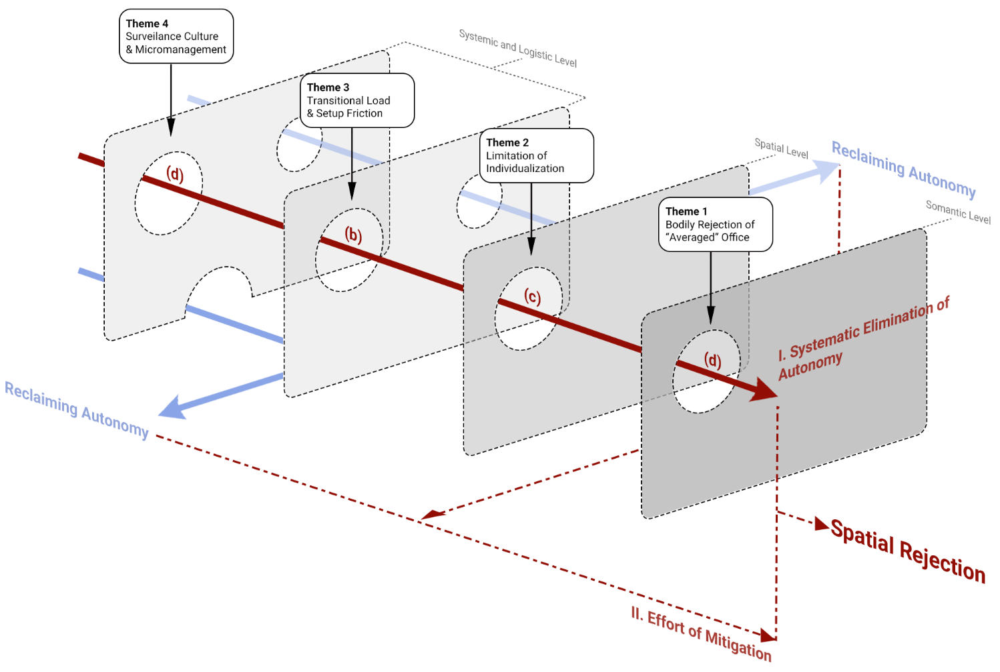

A qualitative study of how knowledge workers experience, adapt to, and move between corporate and home environments.
From photographs and first-hand accounts, recurring spatial conditions were identified, abstracted into composite 3D models, and analyzed across four thematic barriers.
This study traces four compounding barriers across the hybrid workspace — physical, spatial, operational, and behavioral. Each section pairs an archetypal corporate workstation with a home desk: spatial arguments assembled from recurring patterns across participants, not portraits of any one worker.
The two desks make the gap concrete: one surface shaped over time by a person with a body, one configured once and left to run.
Standardized office furniture is not an oversight. It is a deliberate design position: uniformity achieved at scale, calibrated to a statistical median and applied universally regardless of what that median fails to capture. The discomfort it produces is distributed the same way — averaged across a population, and therefore concentrated at the extremes. Workers at both ends described the same trajectory: tolerating the mismatch, adjusting posture incrementally, absorbing the accumulated strain into the working day as a background condition rather than an active problem.
The adaptive impulse is present at the office too. Workers described reaching for fixes: a cushion, a footrest, a personal lamp carried in from home. What the office governs is whether those fixes are permitted to stay. A correction that cannot be stored overnight cannot be maintained long-term. One that draws attention tends to be abandoned. The home desk accumulates adaptations because no institutional logic prevents them. The same adaptations applied to a shared surface become an act of negotiation with an environment that was not designed to hold them.
What the two environments differ on is the corrective response that follows discomfort. At the office, the impulse tends to stop at the point where the correction would have to become visible. Over time, the body adjusts its expectations.
The home desk in this model is not a better-designed workspace. It is a workspace that has been inhabited: accumulated rather than assigned, marked rather than cleared.
Analysis of home workspace data identified five distinct functions that personal objects perform: emotional anchoring, behavioral scaffolding, sensory management, psychological self-regulation, and affirmation of professional identity. These are not decorative categories. A crossed-out wall calendar regulates attention. A plant at screen level manages sensory fatigue. An object left on the surface by someone who matters anchors the day to something beyond the immediate task. Workers described these as operational infrastructure — components of a support system built incrementally and maintained at low cost, because the surface retains whatever is placed on it.
In the corporate office, the same workers described a different calculation. The effort of carrying items in and out. The risk of loss on a surface shared with strangers. The anticipatory audit of how a personal object might read to a senior colleague. The result is a gradual withdrawal: workers stop bringing anything that matters, which means they stop bringing the things that help. The cleared desk is the product of a rational response to an environment that offers no reliable return on spatial investment.
The functional loss is real, even when it is difficult to articulate. Workers at the office described managing attention, affect, and motivation without the environmental support they rely on at home — and doing so invisibly, because the depletion is gradual enough that it rarely presents itself as a workplace problem. It tends to present itself as a preference for working somewhere else.
The two desks in this model are less about what they contain and more about where they begin. One picks up where the previous day ended. The other starts from scratch, every morning.
Workers do not evaluate the office against an abstract ideal. They evaluate it against the concrete operational platform they have been using every other day: the home environment. That baseline carries three structural advantages the office cannot easily match — material permanence, disturbance-free working conditions, and temporal self-regulation. Each morning, the comparison is made again. Not through deliberate calculation, but through the body's experience of the transition: the bag packed the night before, the setup rebuilt from a generic starting point, the rhythm dismantled before it has properly formed.
The commute is a cognitive state as much as a physical one: a period that belongs neither to rest nor to work, and that has to be recovered from before the first task can begin. The setup sequence that follows compounds this. Each cable reconnected and monitor readjusted is individually minor. Together, they consume the window of the day when focus is sharpest. The interruptions that arrive before the setup is complete begin the process again.
The office visit is not rejected in a single decision. It is eroded across many small ones. Each day that the friction of attendance consistently outweighs the return shifts the calculation slightly. The pattern becomes behavioral before it becomes conscious: fewer visits, shorter stays, a growing preference for the environment that simply starts.
The two desks in this model are defined less by their objects than by their sight lines. One is open to observation from every direction. The other has a frame.
The open floor plan does not require active surveillance to produce its behavioral effects. It requires only the structural possibility of being observed: a desk that faces outward, a walkway behind it, a manager who might pass at any moment. Workers described a continuous layer of self-monitoring maintained throughout the day: a browser tab angled toward work content before someone approaches, a break timed to a lull in floor activity, a posture corrected for a colleague's peripheral glance. None of these are dramatic gestures. They are largely automatic, invisible to the workers themselves as much as to anyone else. Their cost is real, and diffuse.
The home desk does not dissolve the visibility problem. The webcam introduces its own version: a managed rectangle, a background made legible for colleagues, a frame that requires deliberate decisions about what appears within it. Workers described positioning objects just outside the camera's edge, dressing differently above and below the frame, arranging the visible background for calls rather than for use. The difference between corporate and domestic visibility lies in the degree to which the worker can author what is seen: at the office, the architecture decides. At home, the worker sets the frame.
What both environments share is the structural fact of being observed — differently, by different audiences, under different conditions. The question of how to inhabit a workspace without performing it does not disappear when the worker goes home. It shifts form. The frame, at least, has edges.
Four separate conditions, each examined in isolation across eight archetypal desks. What the model proposes is what their simultaneous presence produces: a configuration where each layer of constraint forecloses the compensatory response that the layer before it naturally provokes.
Taken individually, each barrier identifies a distinct domain of autonomy that some corporate environments remove. The first forecloses environmental autonomy: the capacity to calibrate sensory and physical conditions to one's own physiological needs. The second forecloses spatial autonomy: the capacity to invest in, anchor, and individualize a workstation as personal territory. The third forecloses operational autonomy: the capacity to govern the pace and continuity of the working day. The fourth forecloses behavioral autonomy: the capacity to regulate one's own body and affect without institutional scrutiny. Separately, each represents a design failure. Together, they represent a system.
The system's particular character is that each barrier forecloses the compensatory response that the previous one naturally provokes. A worker experiencing ergonomic mismatch reaches for a corrective object. The second barrier removes the conditions under which that object can be stored or reliably retained. A worker who accepts carrying the object daily absorbs a compounding logistical cost. The third barrier makes that cost, over time, structurally unsustainable. A worker who manages all three finds that the postural adjustments still available as last-resort relief become inadmissible under the fourth barrier's surveillant conditions. The cascade does not add friction. It targets exits.

The diagram maps this logic visually, adapted from Reason's Swiss Cheese Model of systemic failure. Each layer represents a barrier that workers can, and often do, surmount individually. The analytical finding is the systematic elimination of every available compensatory path. Workers do not stop trying. They exhaust the options.
Workers who withdraw to the home environment encounter the same four barrier domains in analog form. The ergonomic fit is often imperfect, the sensory environment is not always adequate, domestic interruptions occur, and the webcam creates its own form of managed visibility. The home is not a spatially superior environment. The relevant structural difference is that its barriers tend not to co-activate. A worker experiencing ergonomic discomfort at home retains environmental and behavioral autonomy to address it. A worker whose domestic routine is interrupted retains the spatial permanence and operational continuity to recover. Because the barriers remain isolated, compensatory strategies remain available. Partial barriers produce adaptation. Aligned barriers produce spatial rejection.
The data also surfaced a consistent parallel finding about the home environment. Participants did not describe it as an uncomplicated solution. Motivational deficits emerged in the absence of institutional rhythm, domestic boundaries eroded across long uninterrupted stretches of remote work, and webcam visibility introduced performative demands of its own. These are real structural costs, present across the sample with enough regularity to constitute a pattern. What the data distinguish is the degree to which home barriers remain individually addressable rather than simultaneously aligned. A worker experiencing ergonomic discomfort at home retains the spatial and behavioral autonomy to respond to it. The same worker in the corporate office does not. The study's contribution is to trace that structural difference, and to identify the conditions under which spatial rejection becomes a rational outcome. Whether those conditions can be changed is a question the findings frame, but do not resolve. That work belongs to the practitioners and institutions who design these environments.